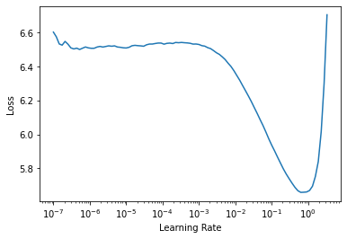

! pip install fastai2 -q
! pip install nbdev -q |████████████████████████████████| 194kB 2.8MB/s
|████████████████████████████████| 51kB 1.7MB/s Problem Understanding * Text Regression problem: The task is given the tweet text, we are expected to predict whether the given tweet is positive, negetive or neutral. The target variable value ranges from (-1, 1)
|████████████████████████████████| 194kB 2.8MB/s
|████████████████████████████████| 51kB 1.7MB/s --2020-05-17 16:48:37-- https://fastaistudygroup.slack.com/files/URA50KQ7R/F0140NHLB8Q/zindi_vaccinate.zip
Resolving fastaistudygroup.slack.com (fastaistudygroup.slack.com)... 3.229.174.54, 54.209.135.9, 54.227.211.227
Connecting to fastaistudygroup.slack.com (fastaistudygroup.slack.com)|3.229.174.54|:443... connected.
HTTP request sent, awaiting response... 302 Found
Location: https://fastaistudygroup.slack.com/?redir=%2Ffiles%2FURA50KQ7R%2FF0140NHLB8Q%2Fzindi_vaccinate.zip [following]
--2020-05-17 16:48:37-- https://fastaistudygroup.slack.com/?redir=%2Ffiles%2FURA50KQ7R%2FF0140NHLB8Q%2Fzindi_vaccinate.zip
Reusing existing connection to fastaistudygroup.slack.com:443.
HTTP request sent, awaiting response... 200 OK
Length: unspecified [text/html]
Saving to: ‘zindi_vaccinate.zip’
zindi_vaccinate.zip [ <=> ] 39.75K --.-KB/s in 0.01s
2020-05-17 16:48:37 (3.13 MB/s) - ‘zindi_vaccinate.zip’ saved [40702]
Go to this URL in a browser: https://accounts.google.com/o/oauth2/auth?client_id=947318989803-6bn6qk8qdgf4n4g3pfee6491hc0brc4i.apps.googleusercontent.com&redirect_uri=urn%3aietf%3awg%3aoauth%3a2.0%3aoob&response_type=code&scope=email%20https%3a%2f%2fwww.googleapis.com%2fauth%2fdocs.test%20https%3a%2f%2fwww.googleapis.com%2fauth%2fdrive%20https%3a%2f%2fwww.googleapis.com%2fauth%2fdrive.photos.readonly%20https%3a%2f%2fwww.googleapis.com%2fauth%2fpeopleapi.readonly
Enter your authorization code:
··········
Mounted at /content/gdrive(#4) [Path('/content/gdrive/My Drive/Colab Notebooks/data/vaccination_tweet/SampleSubmission.csv'),Path('/content/gdrive/My Drive/Colab Notebooks/data/vaccination_tweet/Train.csv'),Path('/content/gdrive/My Drive/Colab Notebooks/data/vaccination_tweet/Test.csv'),Path('/content/gdrive/My Drive/Colab Notebooks/data/vaccination_tweet/models')](#4) [Path('SampleSubmission.csv'),Path('Train.csv'),Path('Test.csv'),Path('models')]| tweet_id | safe_text | label | agreement | |
|---|---|---|---|---|
| 0 | CL1KWCMY | Me & The Big Homie meanboy3000 #MEANBOY #MB #MBS #MMR #STEGMANLIFE @ Stegman St. <url> | 0.0 | 1.0 |
| 1 | E3303EME | I'm 100% thinking of devoting my career to proving autism isn't caused by vaccines due to the IDIOTIC posts I've seen about World Autism Day | 1.0 | 1.0 |
| 2 | M4IVFSMS | #whatcausesautism VACCINES, DO NOT VACCINATE YOUR CHILD | -1.0 | 1.0 |
| 3 | 1DR6ROZ4 | I mean if they immunize my kid with something that won't secretly kill him years down the line then I'm all for it, but I don't trust that | -1.0 | 1.0 |
| 4 | J77ENIIE | Thanks to <user> Catch me performing at La Nuit NYC 1134 1st ave. Show starts at 6! #jennifair #mmr… <url> | 0.0 | 1.0 |
| tweet_id | safe_text | |
|---|---|---|
| 0 | 00BHHHP1 | <user> <user> ... & 4 a vaccine given 2 healthy peeps, FDA think just not worth the AE risk unfortunately. |
| 1 | 00UNMD0E | Students starting school without whooping cough vaccinations <url> #scpick |
| 2 | 01AXPTJF | I'm kinda over every ep of <user> being "ripped from the headlines." Measles? Let's get back to crime. #SVU |
| 3 | 01HOEQJW | How many innocent children die for lack of vaccination each year? Around 1.5 million. Too bad all their parents couldn't be here. #SB277 |
| 4 | 01JUKMAO | CDC eyeing bird flu vaccine for humans, though risk is low: Federal officials said Wednesday they're taking steps… <url> |
tweet_id 0
safe_text 0
label 1
agreement 2
dtype: int64label has 1 missing value and agreement has 2 missing values in train_df and safe_text has 1 missing value in safe_text
We have removed the two missing rows due to missing values in label & agreement
Since we have to submit our predictions on our Test.csv, we cannot remove the missing value. So we are going to fill the missing value with space
class DataBlock[source]
DataBlock(blocks=None,dl_type=None,getters=None,n_inp=None,item_tfms=None,batch_tfms=None,get_items=None,splitter=None,get_y=None,get_x=None)
Generic container to quickly build Datasets and DataLoaders
imdb = DataBlock(blocks=(TextBlock.from_folder(path), CategoryBlock), get_items=get_text_files, get_y=parent_label, splitter=GrandparentSplitter(valid_name=‘test’))
TextBlock.from_df[source]
TextBlock.from_df(text_cols,vocab=None,is_lm=False,seq_len=72,min_freq=3,max_vocab=60000,tok_func='SpacyTokenizer',rules=None,sep=' ',n_workers=2,mark_fields=None,res_col_name='text', **kwargs)
Build a TextBlock from a dataframe using text_cols
class SentencePieceTokenizer[source]
SentencePieceTokenizer(lang='en',special_toks=None,sp_model=None,vocab_sz=None,max_vocab_sz=30000,model_type='unigram',char_coverage=None,cache_dir='tmp')
Spacy tokenizer for lang
class ColReader[source]
ColReader(cols,pref='',suff='',label_delim=None)
Read cols in row with potential pref and suff
The task of Languagemodel is to predict the words based on the given text
DataBlock.dataloaders[source]
DataBlock.dataloaders(source,path='.',verbose=False,lens=None,cache=2,bs=64,seq_len=72,num_workers=0,shuffle=False,do_setup=True,pin_memory=False,timeout=0,batch_size=None,drop_last=False,indexed=None,n=None,device=None,wif=None,before_iter=None,after_item=None,before_batch=None,after_batch=None,after_iter=None,create_batches=None,create_item=None,create_batch=None,retain=None,get_idxs=None,sample=None,shuffle_fn=None,do_batch=None)
Create a DataLoaders object from source
Setting up after_item: Pipeline: ToTensor
Setting up before_batch: Pipeline:
Setting up after_batch: Pipeline: (LMTensorText([[ 2, 8, 375, ..., 62, 15, 0],
[ 48, 36, 2, ..., 15, 818, 625],
[ 488, 22, 8, ..., 113, 42, 2207],
...,
[ 79, 11, 88, ..., 86, 18, 110],
[ 9, 8, 49, ..., 1314, 93, 19],
[ 13, 9, 8, ..., 4422, 197, 22]], device='cuda:0'),
tensor([[ 8, 375, 32, ..., 15, 0, 0],
[ 36, 2, 8, ..., 818, 625, 7],
[ 22, 8, 104, ..., 42, 2207, 58],
...,
[ 11, 88, 10, ..., 18, 110, 0],
[ 8, 49, 200, ..., 93, 19, 594],
[ 9, 8, 108, ..., 197, 22, 10]], device='cuda:0'))| text | text_ | |
|---|---|---|
| 0 | xxbos xxmaj eradicating polio . xxmaj using xxup gis to fight this disease . # esriuc vaccinations and improved xxunk conditions . < url > xxbos xxmaj third xxup mmr xxmaj dose well - tolerated xxmaj during xxmaj mumps xxmaj outbreak xxunk < url > # xxunk # newyork # xxup ny xxbos “ < user > xxmaj how about parents xxmaj guide to xxmaj dealing xxmaj with xxmaj people xxmaj who | xxmaj eradicating polio . xxmaj using xxup gis to fight this disease . # esriuc vaccinations and improved xxunk conditions . < url > xxbos xxmaj third xxup mmr xxmaj dose well - tolerated xxmaj during xxmaj mumps xxmaj outbreak xxunk < url > # xxunk # newyork # xxup ny xxbos “ < user > xxmaj how about parents xxmaj guide to xxmaj dealing xxmaj with xxmaj people xxmaj who have |
| 1 | > < user > < user > parents would no longer be able to xxunk on the herd immunity of protected children . xxbos xxmaj all i wanted was an opportunity , a bad nigga , & & some immunity ; to keep a xxunk ' safe from the snakes .. xxbos < user > xxmaj news you might 've missed , from < user > xxmaj no . 5 : 400 | < user > < user > parents would no longer be able to xxunk on the herd immunity of protected children . xxbos xxmaj all i wanted was an opportunity , a bad nigga , & & some immunity ; to keep a xxunk ' safe from the snakes .. xxbos < user > xxmaj news you might 've missed , from < user > xxmaj no . 5 : 400 million |
| 2 | url > xxbos “ < user > xxmaj the ethical xxunk of parents who refuse to vaccinate their children < url > # vaccineswork # vaccinations xxbos xxmaj how well - vaccinated is your child ’s kindergarten ? : xxmaj the xxmaj california xxmaj health and xxmaj safety xxmaj code requires elementary school … < url > xxbos < user > " i never got my kids vaccinated and they are fine | > xxbos “ < user > xxmaj the ethical xxunk of parents who refuse to vaccinate their children < url > # vaccineswork # vaccinations xxbos xxmaj how well - vaccinated is your child ’s kindergarten ? : xxmaj the xxmaj california xxmaj health and xxmaj safety xxmaj code requires elementary school … < url > xxbos < user > " i never got my kids vaccinated and they are fine " |
| 3 | xxmaj vaccination xxmaj records for xxmaj kids < url > xxbos < user > my mmr shows that because xxmaj i 've only xxunk with my xxup xxunk friend for like two weeks . xxmaj and alright xxmaj i 'll believe it when i see it lmao xxbos xxmaj german xxmaj xxunk xxmaj who xxmaj denied xxmaj measles xxmaj exists xxmaj xxunk xxmaj to xxmaj pay xxmaj more xxmaj than $ 100 | vaccination xxmaj records for xxmaj kids < url > xxbos < user > my mmr shows that because xxmaj i 've only xxunk with my xxup xxunk friend for like two weeks . xxmaj and alright xxmaj i 'll believe it when i see it lmao xxbos xxmaj german xxmaj xxunk xxmaj who xxmaj denied xxmaj measles xxmaj exists xxmaj xxunk xxmaj to xxmaj pay xxmaj more xxmaj than $ 100 , |
| 4 | worried about , it 's not worse than the measles . xxmaj shut up . \n xxmaj xxunk , \n xxmaj everyone xxbos xxmaj how can we convince parents to vaccinate ? xxmaj acknowledge their fears . < url > via < user > # autism # antivaxxer xxbos xxmaj is this year 's flu vaccine effective ? xxmaj the experts xxunk in : xxmaj the xxmaj centers for xxmaj disease xxmaj | about , it 's not worse than the measles . xxmaj shut up . \n xxmaj xxunk , \n xxmaj everyone xxbos xxmaj how can we convince parents to vaccinate ? xxmaj acknowledge their fears . < url > via < user > # autism # antivaxxer xxbos xxmaj is this year 's flu vaccine effective ? xxmaj the experts xxunk in : xxmaj the xxmaj centers for xxmaj disease xxmaj control |
| 5 | < user > forms it for sure asked about vaccines . i went to private school but i seem to remember it was required . xxmaj maybe public is xxunk ? xxbos xxmaj neurosurgeon xxmaj exposes xxmaj vaccines , xxup cdc , xxup fda and xxmaj xxunk … : < url > xxbos xxmaj xxunk about running up to xxmaj jenny mccarthy and xxunk " vaccinate xxmaj this ! " - xxmaj | user > forms it for sure asked about vaccines . i went to private school but i seem to remember it was required . xxmaj maybe public is xxunk ? xxbos xxmaj neurosurgeon xxmaj exposes xxmaj vaccines , xxup cdc , xxup fda and xxmaj xxunk … : < url > xxbos xxmaj xxunk about running up to xxmaj jenny mccarthy and xxunk " vaccinate xxmaj this ! " - xxmaj than |
| 6 | school . xxmaj you must send your kids to some type of school . xxmaj you need vaccines to work most places . xxmaj force xxbos xxmaj state vaccination exemptions up xxunk over 30 years : xxmaj religious and medical exemptions claimed by xxmaj bay xxmaj state … < url > xxbos xxmaj vaccines … xxunk xxmaj childrens xxmaj clinic ) < url > xxbos y' all better be xxunk your measles | . xxmaj you must send your kids to some type of school . xxmaj you need vaccines to work most places . xxmaj force xxbos xxmaj state vaccination exemptions up xxunk over 30 years : xxmaj religious and medical exemptions claimed by xxmaj bay xxmaj state … < url > xxbos xxmaj vaccines … xxunk xxmaj childrens xxmaj clinic ) < url > xxbos y' all better be xxunk your measles up |
| 7 | immigrants bringing diseases into the xxup us ? a xxmaj child from xxmaj mexico got measles at xxmaj disney from an # xxunk xxbos < user > i choose not to vaccinate my kids and my xxunk & & xxunk make me feel good about it . xxbos i xxunk this : xxmaj why xxmaj did xxmaj vaccinated xxmaj people xxmaj get xxmaj measles at xxmaj disneyland ? | xxup xxunk < | bringing diseases into the xxup us ? a xxmaj child from xxmaj mexico got measles at xxmaj disney from an # xxunk xxbos < user > i choose not to vaccinate my kids and my xxunk & & xxunk make me feel good about it . xxbos i xxunk this : xxmaj why xxmaj did xxmaj vaccinated xxmaj people xxmaj get xxmaj measles at xxmaj disneyland ? | xxup xxunk < url |
| 8 | xxmaj measles outbreak in xxmaj xxunk xxmaj county spreads to four < url > via < url > xxbos xxmaj good . xxmaj exempt from vaccines , exempt from school . xxmaj period . " california xxmaj moves to xxmaj ban xxmaj all xxmaj vaccination xxmaj exemptions " < url > xxbos xxmaj lol i ca n't with people who do n't vaccinate their children . xxmaj god is n't going to | measles outbreak in xxmaj xxunk xxmaj county spreads to four < url > via < url > xxbos xxmaj good . xxmaj exempt from vaccines , exempt from school . xxmaj period . " california xxmaj moves to xxmaj ban xxmaj all xxmaj vaccination xxmaj exemptions " < url > xxbos xxmaj lol i ca n't with people who do n't vaccinate their children . xxmaj god is n't going to save |
language_model_learner[source]
language_model_learner(dls,arch,config=None,drop_mult=1.0,pretrained=True,pretrained_fnames=None,loss_func=None,opt_func='Adam',lr=0.001,splitter='trainable_params',cbs=None,metrics=None,path=None,model_dir='models',wd=None,wd_bn_bias=False,train_bn=True,moms=(0.95, 0.85, 0.95))
Create a Learner with a language model from dls and arch.
SequentialRNN(
(0): AWD_LSTM(
(encoder): Embedding(4472, 400, padding_idx=1)
(encoder_dp): EmbeddingDropout(
(emb): Embedding(4472, 400, padding_idx=1)
)
(rnns): ModuleList(
(0): WeightDropout(
(module): LSTM(400, 1152, batch_first=True)
)
(1): WeightDropout(
(module): LSTM(1152, 1152, batch_first=True)
)
(2): WeightDropout(
(module): LSTM(1152, 400, batch_first=True)
)
)
(input_dp): RNNDropout()
(hidden_dps): ModuleList(
(0): RNNDropout()
(1): RNNDropout()
(2): RNNDropout()
)
)
(1): LinearDecoder(
(decoder): Linear(in_features=400, out_features=4472, bias=True)
(output_dp): RNNDropout()
)
)SequentialRNN (Input shape: ['64 x 72'])
================================================================
Layer (type) Output Shape Param # Trainable
================================================================
RNNDropout 64 x 72 x 400 0 False
________________________________________________________________
RNNDropout 64 x 72 x 1152 0 False
________________________________________________________________
RNNDropout 64 x 72 x 1152 0 False
________________________________________________________________
Linear 64 x 72 x 4472 1,793,272 True
________________________________________________________________
RNNDropout 64 x 72 x 400 0 False
________________________________________________________________
Total params: 1,793,272
Total trainable params: 1,793,272
Total non-trainable params: 0
Optimizer used: <function Adam at 0x7fee89ac9d90>
Loss function: FlattenedLoss of CrossEntropyLoss()
Model frozen up to parameter group number 3
Callbacks:
- TrainEvalCallback
- Recorder
- ProgressCallback
- ModelReseter
- RNNRegularizerFind the learning rate
Learner.lr_find[source]
Learner.lr_find(start_lr=1e-07,end_lr=10,num_it=100,stop_div=True,show_plot=True,suggestions=True)
Launch a mock training to find a good learning rate, return lr_min, lr_steep if suggestions is True
SuggestedLRs(lr_min=0.06309573650360108, lr_steep=0.0691830962896347)
Learner.fine_tune[source]
Learner.fine_tune(epochs,base_lr=0.002,freeze_epochs=1,lr_mult=100,pct_start=0.3,div=5.0,lr_max=None,div_final=100000.0,wd=None,moms=None,cbs=None,reset_opt=False)
Fine tune with freeze for freeze_epochs then with unfreeze from epochs using discriminative LR
| epoch | train_loss | valid_loss | accuracy | perplexity | time |
|---|---|---|---|---|---|
| 0 | 5.276912 | 3.852003 | 0.315016 | 47.087299 | 00:14 |
| epoch | train_loss | valid_loss | accuracy | perplexity | time |
|---|---|---|---|---|---|
| 0 | 4.046282 | 3.538154 | 0.352984 | 34.403339 | 00:15 |
| 1 | 3.818501 | 3.393587 | 0.369528 | 29.772551 | 00:15 |
| 2 | 3.671724 | 3.367341 | 0.373283 | 29.001310 | 00:15 |
TextBlock.from_df[source]
TextBlock.from_df(text_cols,vocab=None,is_lm=False,seq_len=72,min_freq=3,max_vocab=60000,tok_func='SpacyTokenizer',rules=None,sep=' ',n_workers=2,mark_fields=None,res_col_name='text', **kwargs)
Build a TextBlock from a dataframe using text_cols
class SpacyTokenizer[source]
SpacyTokenizer(lang='en',special_toks=None,buf_sz=5000)
Spacy tokenizer for lang
Setting-up type transforms pipelines
Collecting items from tweet_id ... agreement
0 CL1KWCMY ... 1.000000
1 E3303EME ... 1.000000
2 M4IVFSMS ... 1.000000
3 1DR6ROZ4 ... 1.000000
4 J77ENIIE ... 1.000000
... ... ... ...
9996 IU0TIJDI ... 1.000000
9997 WKKPCJY6 ... 0.666667
9998 ST3A265H ... 1.000000
9999 6Z27IJGD ... 1.000000
10000 P6190L3Q ... 0.666667
[9999 rows x 4 columns]
Found 9999 items
2 datasets of sizes 8000,1999
Setting up Pipeline: ColReader -> Tokenizer -> NumericalizeSetting up Pipeline: ColReader -> RegressionSetup
Building one sample
Pipeline: ColReader -> Tokenizer -> Numericalize
starting from
tweet_id HF5RFML5
label 0
agreement 0.666667
text [xxbos, i, find, it, hard, to, believe, that, no, one, saw, a, problem, with, ", diplomatic, immunity, ., ", xxmaj, it, 's, like, a, pass, to, go, on, a, killing, spree, ,, says, xxmaj, law, &, &, xxmaj, order, .]
text_length 40
Name: 3327, dtype: object
applying ColReader gives
(#40) ['xxbos','i','find','it','hard','to','believe','that','no','one'...]
applying Tokenizer gives
(#40) ['xxbos','i','find','it','hard','to','believe','that','no','one'...]
applying Numericalize gives
TensorText of size 40
Pipeline: ColReader -> RegressionSetup
starting from
tweet_id HF5RFML5
label 0
agreement 0.666667
text [xxbos, i, find, it, hard, to, believe, that, no, one, saw, a, problem, with, ", diplomatic, immunity, ., ", xxmaj, it, 's, like, a, pass, to, go, on, a, killing, spree, ,, says, xxmaj, law, &, &, xxmaj, order, .]
text_length 40
Name: 3327, dtype: object
applying ColReader gives
0.0
applying RegressionSetup gives
tensor(0.)
Final sample: (TensorText([ 2, 21, 455, 40, 574, 16, 228, 41, 68, 123, 792, 19,
622, 56, 31, 1667, 65, 11, 31, 8, 40, 38, 93, 19,
790, 16, 155, 49, 19, 340, 0, 17, 199, 8, 353, 39,
39, 8, 1697, 11]), tensor(0.))
Setting up after_item: Pipeline: ToTensor
Setting up before_batch: Pipeline: partial
Setting up after_batch: Pipeline:
Building one batch
Applying item_tfms to the first sample:
Pipeline: ToTensor
starting from
(TensorText of size 40, tensor(0.))
applying ToTensor gives
(TensorText of size 40, tensor(0.))
Adding the next 3 samples
Applying before_batch to the list of samples
Pipeline: partial
starting from
[(TensorText of size 40, tensor(0.)), (TensorText of size 28, tensor(0.)), (TensorText of size 27, tensor(1.)), (TensorText of size 33, tensor(1.))]
applying partial gives
[(TensorText of size 40, tensor(0.)), (TensorText of size 40, tensor(0.)), (TensorText of size 40, tensor(1.)), (TensorText of size 40, tensor(1.))]
Collating items in a batch
No batch_tfms to applySetting up after_item: Pipeline: ToTensor
Setting up before_batch: Pipeline: partial
Setting up after_batch: Pipeline: (torch.Size([64, 53]), torch.Size([64]))| text | text_ | |
|---|---|---|
| 0 | xxbos < user > xxmaj how xxmaj could xxmaj you xxmaj put xxmaj ur xxmaj child xxmaj in xxmaj so xxmaj much xxmaj danger ? xxmaj most xxmaj of xxmaj the xxmaj diseases xxmaj that xxmaj they xxmaj have xxmaj vaccines 4 , i xxmaj had xxmaj xxunk . xxmaj vaccinate . xxunk | 1.0 |
| 1 | xxbos am - news : xxmaj week xxmaj ahead : xxup xxunk in the xxup er , xxup hiv xxmaj news , xxmaj docs on xxmaj measles xxmaj vaccine : xxmaj week xxmaj ahead : xxup xxunk in the xxup er , xxup hiv xxmaj news , xxmaj docs … < url > | 0.0 |
| 2 | xxbos xxup like xxup why xxup the xxup fuck xxup are xxup people xxup not xxup vaccinating xxup their xxup kids ? ! ? ! ? ! i xxup do nt xxup get xxup it & & xxup it xxup xxunk xxup me xxup off xxrep 3 ! | 1.0 |
| 3 | xxbos i xxmaj know xxmaj i 'm xxmaj late xxup af xxmaj but xxmaj happy # xxunk xxmaj to xxmaj my xxmaj xxunk < user > xxmaj turn xxmaj up xxmaj lil xxmaj bro ! 💯 # xxup mmr @ xxup xxunk xxmaj south … < url > | 0.0 |
| 4 | xxbos < user > < user > xxmaj ppl xxmaj need 2 xxmaj immunize xxmaj their xxmaj kids . xxmaj do xxmaj research . xxmaj most xxmaj diseases xxup worse xxup than xxup inoculation . xxup stop xxmaj this xxmaj misguided xxmaj insanity , xxmaj shots ! | 1.0 |
| 5 | xxbos xxmaj let 's get this straight , first it was xxup isis , then it was xxmaj ebola , then back to xxup isis , and now … xxmaj measles ? xxmaj fake xxup isis threats ? xxmaj yep . xxmaj fear . xxmaj fear . | 0.0 |
| 6 | xxbos < user > < user > < user > xxup smdh # xxmaj flu # xxmaj vaccines , # xxmaj pharma # xxmaj fraud , # xxmaj quack # xxmaj science , the # xxup cdc & & # xxup who # health < url > | -1.0 |
| 7 | xxbos xxup not inspiring to hear xxmaj another xxmaj xxunk in the xxmaj xxunk this xxup am . xxmaj my gr 8 class voted to sing it at grad ( xxunk ) & & then i heard it on xxup mmr , not xxup xxunk . | 0.0 |
| 8 | xxbos [ to roommate ] \n " we should go get flu vaccines . " \n xxmaj why ? \n " well , the flu is n't a great a great disease . " \n xxmaj the flu is fine . \n " ok . " | 0.0 |
text_classifier_learner[source]
text_classifier_learner(dls,arch,seq_len=72,config=None,pretrained=True,drop_mult=0.5,n_out=None,lin_ftrs=None,ps=None,max_len=1440,y_range=None,loss_func=None,opt_func='Adam',lr=0.001,splitter='trainable_params',cbs=None,metrics=None,path=None,model_dir='models',wd=None,wd_bn_bias=False,train_bn=True,moms=(0.95, 0.85, 0.95))
Create a Learner with a text classifier from dls and arch.
SequentialRNN (Input shape: ['64 x 53'])
================================================================
Layer (type) Output Shape Param # Trainable
================================================================
RNNDropout 64 x 53 x 400 0 False
________________________________________________________________
RNNDropout 64 x 53 x 1152 0 False
________________________________________________________________
RNNDropout 64 x 53 x 1152 0 False
________________________________________________________________
BatchNorm1d 64 x 1200 2,400 True
________________________________________________________________
Dropout 64 x 1200 0 False
________________________________________________________________
Linear 64 x 50 60,000 True
________________________________________________________________
ReLU 64 x 50 0 False
________________________________________________________________
BatchNorm1d 64 x 50 100 True
________________________________________________________________
Dropout 64 x 50 0 False
________________________________________________________________
Linear 64 x 1 50 True
________________________________________________________________
SigmoidRange 64 x 1 0 False
________________________________________________________________
Total params: 62,550
Total trainable params: 62,550
Total non-trainable params: 0
Optimizer used: <function Adam at 0x7fee89ac9d90>
Loss function: FlattenedLoss of MSELoss()
Model frozen up to parameter group number 4
Callbacks:
- TrainEvalCallback
- Recorder
- ProgressCallback
- ModelReseter
- RNNRegularizer| tweet_id | safe_text | |
|---|---|---|
| 0 | 00BHHHP1 | <user> <user> ... & 4 a vaccine given 2 healthy peeps, FDA think just not worth the AE risk unfortunately. |
| 1 | 00UNMD0E | Students starting school without whooping cough vaccinations <url> #scpick |
| 2 | 01AXPTJF | I'm kinda over every ep of <user> being "ripped from the headlines." Measles? Let's get back to crime. #SVU |
| 3 | 01HOEQJW | How many innocent children die for lack of vaccination each year? Around 1.5 million. Too bad all their parents couldn't be here. #SB277 |
| 4 | 01JUKMAO | CDC eyeing bird flu vaccine for humans, though risk is low: Federal officials said Wednesday they're taking steps… <url> |
| ... | ... | ... |
| 5172 | ZXVVNC5O | jenny mccarthy is on new years rockin eve. what has she done lately besides not vaccinate her kids and give us all goddamn polio?? |
| 5173 | ZYIANVI8 | Measles reported in Clark Co. for 1st time since 2011 <url> |
| 5174 | ZYITEHAH | <user> issues alert regarding Measles in TX. Keep your DDx up to date, people! #Emergencymedicine |
| 5175 | ZZ3BMBTG | I can't believe people don't vaccinate their kids! I've been vaccinated for everything and then some. |
| 5176 | ZZIYCVNH | "<user> Alternatives to #Flu Vaccine <url> #natural #health" A good read with a few new tips & many we #jerf folk know |
5177 rows × 2 columns
DataLoaders.test_dl[source]
DataLoaders.test_dl(test_items,rm_type_tfms=None,with_labels=False, **kwargs)
Create a test dataloader from test_items using validation transforms of dls
Learner.get_preds[source]
Learner.get_preds(ds_idx=1,dl=None,with_input=False,with_decoded=False,with_loss=False,act=None,inner=False,reorder=True,save_preds=None,save_targs=None,concat_dim=0)
Get the predictions and targets on the ds_idx-th dbunchset or dl, optionally with_input and with_loss
(tensor([[-0.0063],
[ 0.8084],
[ 0.2124],
...,
[ 0.2862],
[ 0.8839],
[ 0.4553]]), None, tensor([[-0.0063],
[ 0.8084],
[ 0.2124],
...,
[ 0.2862],
[ 0.8839],
[ 0.4553]]))(#4) [Path('SampleSubmission.csv'),Path('Train.csv'),Path('Test.csv'),Path('models')]| tweet_id | label | |
|---|---|---|
| 0 | 00BHHHP1 | -0.006287 |
| 1 | 00UNMD0E | 0.808357 |
| 2 | 01AXPTJF | 0.212385 |
| 3 | 01HOEQJW | 0.994107 |
| 4 | 01JUKMAO | 0.177752 |
Yaaaaaaaaaaaaaaaaaaayyyyyyy!!!!!